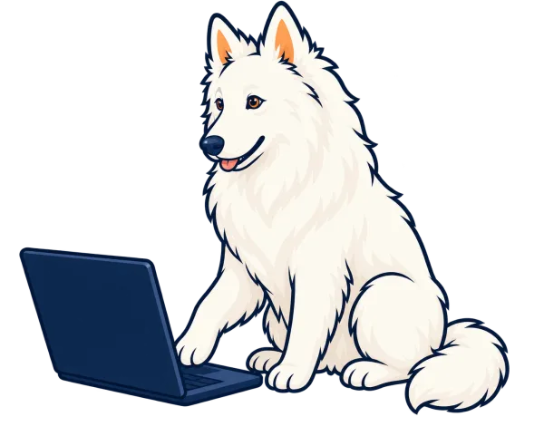
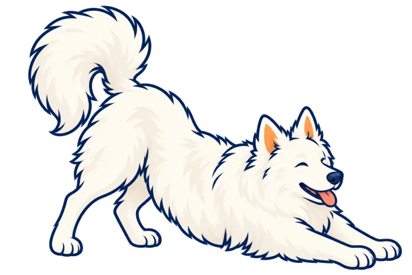

The timer reaches zero.
Pawse waits.
Finish the sentence, save the file, or complete the thought. Pawse starts your break when you naturally pause—not the instant your focus session ends.
Download Pawse for macOS ↓ View the source
macOS 14 or later · Apple silicon and Intel · No account · Early access
Why I made it.
I tried a number of focus timers, but never found one that felt quite at home on the Mac or handled the end of a session the way I wanted. So I made a small one for myself.
Instead of interrupting the moment Focus ends, Pawse shows a quiet reminder and waits. Click it when you are ready, or pause the keyboard and pointer for a moment. If you immediately start working again, Pawse backs out and waits for the next pause.



When you stop, it steps in.
A break can use your wallpaper or an image you choose. It fills every display, keeps an Emergency Exit available, and cleans up when the break is over.


Nothing leaves your Mac.
Settings and session history stay local. Pawse has no account, cloud sync, telemetry, advertising, or networking feature. Natural-break detection reads only aggregate system idle time—not keys, pointer positions, app names, windows, or screen contents.

Open source.
Pawse is a small independent project, released under the MIT License. The code is public, so you can read it, build it yourself, report a problem, or shape it into something that works better for you.